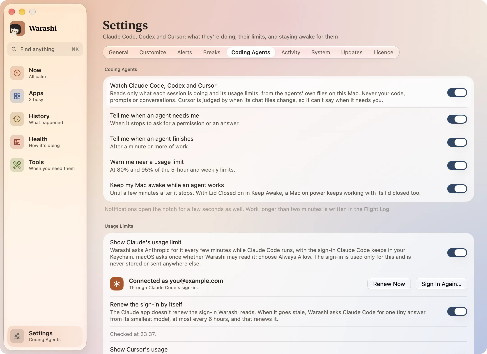

Werk je met Claude Code, Codex of Cursor, dan kan Warashi ze voor je in de gaten houden: wat elke sessie doet, hoe dicht elk bij zijn gebruikslimiet zit en wanneer er een je nodig heeft. Het staat uit tot je het aanzet.
- Zet het aan
Open Instellingen › Codeeragenten en zet Houd Claude Code, Codex en Cursor in de gaten aan, of druk op Zet aan… op de kaart Codeeragenten bovenaan Apps › Ontwikkelaar. Warashi vraagt één keer of hij meldingen mag sturen.


- Kies wat je wilt horen
Meld het als een agent me nodig heeft (hij stopte om een toestemming of antwoord te vragen), Meld het als een agent klaar is (na een minuut of langer werk) en Waarschuw me vlak voor een gebruikslimiet (bij 80% en 95%). Elk komt binnen als melding en opent de inkeping: een limiet een paar seconden, de andere tot je teruggaat naar de app van de agent. Klik op de melding om je agents te zien.
- Zie ze werken
De kaart Codeeragenten in Apps › Ontwikkelaar toont elke sessie: aan het werk, heeft jou nodig of klaar, in welk project. Terwijl er een werkt, toont de inkeping ernaast hoe lang, en een wachtende agent komt eerst. Voeg Codeeragenten toe aan het menubalkvenster in Instellingen › Aanpassen om ook de limieten daar te zien, of kies Limiet van codeeragent naast het geestje in je menubalk.


Gebruikslimieten
Elke limiet is een ring: de limiet van 5 uur en de weeklimiet, met wanneer hij opnieuw begint. Een ring wordt oranje vanaf 80% en rood vanaf 95%.
- Codex schrijft zijn limieten in zijn eigen bestanden op je Mac, dus ze verschijnen na het volgende antwoord van Codex.
- Cursor toont zijn maandelijkse gebruik. Zet Toon het gebruik van Cursor aan; Warashi vraagt het op bij Cursor met de aanmelding die Cursors opdrachtregelagent in je Sleutelhanger bewaart, dus meld je één keer aan met
cursor-agent login. Als macOS erom vraagt, kies dan Altijd toestaan. - Claude Code bewaart zijn limiet niet op je Mac. Zet Toon de gebruikslimiet van Claude aan en Warashi vraagt hem op bij Anthropic, om de paar minuten terwijl Claude Code draait, met de eigen aanmelding van Claude Code uit je Sleutelhanger. macOS vraagt één keer, als je het aanzet, of Warashi die mag lezen: kies Altijd toestaan. Warashi vraagt dit nooit uit zichzelf: als macOS later je toestemming nodig heeft, zegt Instellingen dat, met een knop Sta toe…. De aanmelding wordt alleen voor dit verzoek gebruikt; ze wordt nooit opgeslagen, gewijzigd of ergens anders naartoe gestuurd.
Inloggen bij Claude
Onder Toon Claude's gebruikslimiet toont Instellingen als wie Claude Code is ingelogd. Niet ingelogd? Log in opent de eigen inlog van Claude Code in Terminal, die je naar je browser brengt. Claude Code vernieuwt zijn inlog alleen terwijl je het gebruikt, dus na een rustige dag kan de limiet stoppen met bijwerken: met Vernieuw de inlog zelf aan vraagt Warashi Claude Code om één klein antwoord van het kleinste model, hooguit elke zes uur, en vernieuwt Claude Code het. Vernieuw nu doet het meteen. Warashi vernieuwt of schrijft zelf nooit een inlog.
Blijf wakker terwijl ze werken
Zet Houd mijn Mac wakker terwijl een agent werkt aan in Instellingen › Codeeragenten. Je Mac blijft wakker terwijl een agent werkt of op je wacht, en nog drie minuten daarna. Dit staat los van Wakker houden, dat uit blijft: alleen de Mac blijft wakker, en het scherm gaat gewoon in slaap. Met Wakker blijven met gesloten klep aan blijft een MacBook aan de lader doorwerken met de klep dicht.
In het Logboek
Werk van meer dan twee minuten staat in het Logboek: "Claude Code werkte 1 u 12 min, in shop".
Als er iets niet klopt
- Bij de limiet van Claude staat dat de aanmelding is verlopen: start Claude Code één keer in een terminal en hij vernieuwt zijn aanmelding. Claude Code in de Claude-app voor het bureaublad bewaart zijn aanmelding elders.
- De limiet van Codex verschijnt niet: hij verschijnt na het volgende antwoord van Codex, uit de sessies van de afgelopen week.
- Cursor zegt nooit dat hij je nodig heeft: Cursor legt dat nergens vast waar Warashi mag lezen, dus alleen bezig en klaar worden getoond, ongeveer een minuut nadat hij stopt.
- Andere agents: Gemini CLI, Aider en andere tonen hun CPU en geheugen in Ontwikkelaar, zonder status voor bezig of wachtend.
Meer in Problemen oplossen, of mail adam@warashi.app.